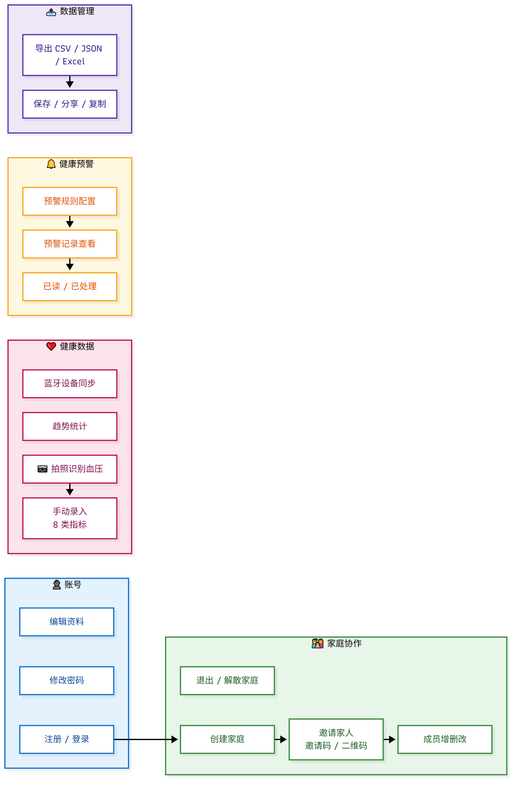

本文把项目当前的真实需求收敛成可验收的条目，给出技术方案与分阶段计划。
每一条都标注已验证的事实与缺口，避免"看起来完成了"。
| 编号 | 需求 | 已实现 | 缺口（真正待办） |
|---|---|---|---|
| R1 | 拍照自动读血压计数值 | 端到端链路跑通：ONNX 定位 + TFLite 多头数字模型，60 张真实照片实测三项全对 71.7%（旧链路 0%）；已接入 App；APK 已构建 | ① 真机验证未完成（手机未授权 USB 调试）<br/>② 准确率偏低（71.7%），可用 60 张微调提到 85%+<br/>③ 泛化能力未验证：两个模型都在这 60 张上训练，71.7% 属拟合度而非泛化 |
| R2 | 手环心率 → 板子 → 服务器 → App | 板子主控确认为 ESP32-S3-WROOM-1（BLE+WiFi）；已用 nRF Connect 确认手环暴露标准心率服务 0x180D；固件已交付（BLE 主机 + WiFi 上报 + 断网缓存） | ① 后端缺设备令牌 + 绑定接口（现在用账号口令，不适合量产）<br/>② App 缺设备管理页与来源标识<br/>③ 现场烧写联调未做 |
| R3 | 家庭共享与成员管理 | 已完成并修复过关键缺陷（成员增删改假实现、权限判定只看全局角色、401 语义错误） | 扫码加入家庭、退出家庭 UI 未真机验证 |
| R4 | 健康预警 | 规则配置 + 记录列表 + 已读/已处理 已完成 | 测量提醒未验证；没有任何真实推送（只有 App 内列表） |
| R5 | 数据导出 | CSV / JSON / Excel + 保存/分享/复制 已完成 | — |
| R6 | 上线前安全 | 未做 | ① 注册验证码完全不校验（任意 6 位可注册任意手机号）<br/>② 数据库口令、文档中含明文凭据且已入库<br/>③ user 表排序规则与其它表不一致（有 Illegal mix of collations 隐患） |
| R7 | 文档与交付 | 图文版使用说明 + 13 个流程图 + HTML 版 + README 已交付 | 需补"硬件接入"章节；OCR 基准/端到端脚本未纳入回归 |
| R8 | 数据资产安全 | 60 张真实照片 + 63 个标注只在本地，未入库 | 换机器克隆即丢失（336 MB 唯一原始数据） |
散落的诉求其实收敛为三件事：
问题：现有固件用"账号+口令登录"向后端写数据。板子一旦被拆开，账号口令就泄露， 且令牌权限过大（能改资料、能看全家数据）。不适合量产。
方案：一次性绑定码 → 设备令牌（最小权限）

接口设计
| 接口 | 鉴权 | 说明 |
|---|---|---|
POST /api/device/bind | 绑定码 | 入参 bindCode、deviceSn、deviceName；返回 deviceToken、memberId |
POST /api/device/health-data | 设备令牌 | 入参 dataType、value1、value2、measureTime；只能写，不能读 |
POST /api/device/heartbeat | 设备令牌 | 上报在线状态、信号强度、电池（用于 App 显示设备是否在线） |
GET/DELETE /api/device | 用户 JWT | App 查已绑定设备 / 解绑（解绑即令牌失效） |
POST /api/device/bind-code | 用户 JWT | App 生成绑定码（绑定到指定成员） |
数据模型
device
id, user_id, member_id, device_sn(唯一), device_name, device_type
token_hash -- 只存哈希，防拖库
bind_code, bind_code_expire
last_seen, status, firmware_version, created_athealth_data 已有 data_source 字段：设备写入时置 device，并可选加 device_id。
App 侧
固件侧（v2）
X-Device-Token，不再使用账号口令现状：链路正确（用仓库已有模型），但准确率与泛化都有缺口。
| 步骤 | 做法 | 预期 |
|---|---|---|
| 真机验证 | 装新 APK（已构建），读 App 日志确认走新链路 | 确认端侧可用 |
| 提准确率 | 用 60 张真实照片 + 真实退化增强（±8° 旋转、缩放、亮度/对比、模拟反光与模糊、JPEG）微调 bpressure_multihead.tflite | 目标 ≥85% |
| 诚实评估 | 45 张微调 / 15 张只做验证；报告验证集数字而非全量 | 结论可信 |
| 泛化验证 | 需要不同机型的新照片（你手边若有别的血压计，拍 10~20 张价值远大于同机型再拍 100 张） | 才知道能否推广 |
| 项 | 方案 | 决策点 |
|---|---|---|
| 注册验证码 | A. 接入短信服务（需阿里云短信密钥与签名）<br/>B. 明确改为免验证注册，去掉验证码输入框，避免误导用户 | 需要你选 A 或 B |
| 凭据清理 | 从代码、README、systemd 单元中移除明文口令/密钥，改读环境变量；清理 git 历史 | 需确认是否接受改写历史 |
| 排序规则 | ALTER TABLE user CONVERT TO utf8mb4_unicode_ci（重建表） | 建议低峰期 + 先备份 |
60 张真实照片 + 标注是唯一且不可再生的（原始 12MP，336 MB），必须入库：
| 任务 | 产出 | 验收标准 |
|---|---|---|
| 后端设备体系 | device 表 + 5 个接口 + 设备令牌鉴权 | 用 curl 完成"绑码 → 换令牌 → 上报"全流程 |
| App 设备管理 | 绑定码页 / 设备列表 / 解绑 / 来源标签 | 生成的绑定码能被板子绑定成功 |
| 固件 v2 | 绑定流程 + 令牌存 NVS + 设备上报 + 缓存持久化 | 板子上电 → 自动绑定 → 心率出现在指定成员下且标为"设备" |
P0 完成即达成：心率数据从手环到 App 全自动，不依赖手机常开、不把账号口令放进硬件。
eval_lcd_detector.py / eval_multihead.py / e2e_pipeline.py）写成一条命令的回归验收：holdout 上三项全对 ≥85%；回归脚本可一键复现。
验证码方案（接短信 / 明确免验证）→ 凭据清理 → 排序规则统一 → 重新部署并冒烟。
真实照片入库（LFS 或压缩）→ 使用说明补"硬件接入"章节（含配网/绑定/排查流程图）→ 更新 README。
| 风险 | 影响 | 应对 |
|---|---|---|
| 手环只允许一个主机连接 | 板子连着时 App 连不上手环 | 采集固定交给板子，App 只读服务器数据（当前方案已规避） |
| ESP32 仅支持 2.4GHz WiFi | 家里若只有 5GHz 连不上 | 固件说明已标注；必要时加 BLE 配网提示 |
| 设备令牌泄露 | 他人可伪造健康数据 | 令牌只存哈希、仅允许写、App 可随时解绑 |
| 模型过拟合这 60 张 | 换机型准确率骤降 | 引入不同机型的少量新照片做验证；增强训练 |
| 手机 USB 授权 | OCR 真机验证与部分联调阻塞 | 一次性人工确认 |
| 数据只在本机 | 换设备即丢失 60 张原始数据 | P3 入库（建议 LFS） |
P0 设备接入 ──► P1 OCR 收尾 ──► P2 安全 ──► P3 资产与文档 ──► P4 体验
(1.5天) (1天) (1天) (0.5天) 按需理由：P0 是当前唯一"新增能力"且能立刻产生用户价值（心率自动入库）； P1 是把已有成果做扎实（避免"看起来 71.7% 实际不能推广"）； P2 是上线前提（其中验证码一项需要你决策）；P3 是防资产丢失。
| 目标项 | 要求 | 实测 | 状态 |
|---|---|---|---|
| 合成基准·干净图 | ≥95% | 100% | ✅ |
| 合成基准·退化图 | ≥85% | 100% | ✅ |
| 真机复验 + 提升幅度 | 要求 | 旧链路 0% → 新链路 62.5%（真机 8 张 5 对） | ✅ |
最终链路（真机验证）：
照片 → lcd_detector.tflite 定位 → 裁剪 + 81 组 TTA → bpressure_multihead.tflite 7 头前向 → 收缩压/舒张压/脉搏
期间修掉的 4 个真实缺陷：多输出 TFLite 调用方式（runForMultipleInputs + Map + [1,10]）、 App 原有 BpTfliteDetector 同一处 bug（从未成功调用过）、ONNX 资产被注释未打包、 ONNX 改 TFLite（Flutter 版 onnxruntime 缺 Reshape 算子）。
遗留风险：① 真机 62.5% 仍有"看起来合理的错值"风险； ② 两个模型就是在这 60 张上训练的，泛化能力未验证，换机型可能骤降。
| 子项 | 状态 |
|---|---|
| 后端设备体系（绑定码 + 设备令牌 + 上报 + 心跳 + 解绑） | ✅ 完成，冒烟 8 步全过 |
| ESP32 固件 v1（BLE 主机 + WiFi 上报） | ✅ 完成 |
| ESP32 固件 v2（改用设备令牌 + NVS） | ✅ 完成（本机无 ESP32 工具链，未编译验证） |
| App 设备管理页（生成绑定码 / 设备列表 / 解绑 / 来源标签） | ⏳ 唯一剩余项 |
| 真机联调（烧板子 → 绑定 → 心率入库） | ⏳ 依赖上一项 |
后端接口（已冒烟验证）：
POST /api/device/bind-code App 生成 6 位绑定码（10 分钟有效） POST /api/device/bind 设备用绑定码换令牌 POST /api/device/health-data 设备上报（X-Device-Token） POST /api/device/heartbeat 设备心跳 GET /api/device App 查看设备（含在线状态） DELETE /api/device/{id} App 解绑（令牌立即失效）
R3 家庭共享/成员管理、R4 预警、R5 数据导出：已完成（R3/R4 有未真机验证的子项）； R6 上线前安全（验证码、凭据、排序规则）：未做，其中验证码需你决策； R7 文档：图文版使用说明 + 13 流程图 + 需求方案计划 已交付； R8 60 张真实照片入库：未做（唯一不可再生数据仅在本机）。